Варіант 3. Виконав Чумак Кирил, група ІПЗ-11(3). Викладач Ковалюк Тетяна Володимирівна.
Мета роботи
- Вивчити тип даних "структура" і масиви структур.
- Опанувати передачу структур і масивів структур у функції та повернення їх із функцій.
- Навчитися виконувати пошук у масиві структур за ключами, заданими з клавіатури.
Умова задачі
Варіант 3. У таблиці методички 25 варіантів, тому для номера 28 у списку групи маємо 28 - 25 = 3.
Створити масив структур. Кожна структура складається з таких елементів: факультет, курс, група, прізвища студентів, екзаменаційні оцінки. Реалізувати запити:
- визначити факультет і курс з максимальною кількістю відмінників;
- вивести список відмінників;
- знайти групу, де немає двієчників.
Результати запитів вивести у вигляді таблиць.
Вимоги методички до програми:
- програма має меню команд, які виконуються через виклики функцій;
- кожна функція робить окрему обмежену дію: створення масиву, виведення масиву, пошук і виведення результатів запитів;
- застосування покажчиків на масив структур і окремі структури схвалюється;
- масив створюється введенням з клавіатури або генерацією рядків і чисел;
- створений масив обов'язково виводиться таблицею, заголовок якої відповідає полям структури;
- пошук виконується за ключами, заданими з клавіатури;
- результати запитів виводяться таблицею, заголовок виводиться один раз;
- бібліотеку STL використовувати не можна, дозволені string.h, ctype.h, stdlib.h.
Аналіз задачі
Один запис масиву описує одного студента. Структура StudentRecord має поля: факультет,
курс, група, прізвище і масив із трьох екзаменаційних оцінок. Оцінки беруться за шкалою від 2 до 5.
Відмінник має всі оцінки 5, двієчник має хоча б одну двійку. У масиві може бути до 30 записів,
курс лежить від 1 до 4, текстове поле має до 15 символів. Програма виводить текст англійською,
тому й дані англійські.
Масив вводиться з клавіатури або генерується. Під час генерації факультет, закінчення назви групи і прізвище вибираються випадково. Назва групи складається з назви факультету й закінчення, а перша цифра закінчення збігається з курсом. Для кожного студента спершу вибирається випадкова найнижча оцінка, а потім усі оцінки беруться від неї до 5. Тому серед випадкових записів трапляються і відмінники, і студенти з двійками.
У першому запиті максимум шукається по всьому масиву, тому ключ пошуку не вводиться. Другий запит має ключ факультет, третій запит має ключ курс. Назва факультету порівнюється точно, тому FIT і fit вважаються різними факультетами.
Щоб рахувати дані для пари "факультет, курс" або для групи, функція findFirst знаходить
перший запис цієї пари чи групи. Лічильник відмінників і ознака двійки лежать у допоміжних масивах
на місці цього першого запису. Група визначається факультетом, курсом і назвою. Якщо кілька пар
мають однакову найбільшу кількість відмінників, виводяться всі такі пари. У таблиці першого запиту
в колонці групи стоїть слово all, бо там рахується весь курс.
Функції readRecord і generateRecord повертають структуру,
countGrades отримує структуру як параметр, printJournal і
printGroups отримують покажчик на масив структур.
Числа вводить функція inputNumber. Якщо введено не число або число поза межами,
програма виводить повідомлення і просить ввести ще раз. Те саме відбувається, якщо текст довший за
15 символів. На неіснуючий пункт меню або літеру програма відповідає No such menu item. Якщо масив
порожній або нічого не знайдено, виводиться No records або No results.
Таблиця 1 - Функції програми
| Функція | Що робить |
|---|---|
printTitle | виводить назву роботи, автора й умову завдання |
inputNumber | вводить ціле число із заданих меж |
inputField | вводить текстове поле |
readRecord | вводить один запис з клавіатури |
generateRecord | створює випадковий запис |
printJournal | виводить масив записів таблицею |
createJournal | створює масив і виводить його |
countGrades | рахує задану оцінку в записі |
findFirst | шукає перший запис пари або групи |
printGroups | виводить факультет, курс і групу таблицею |
findBestCourses | запит 1: факультет і курс з найбільшою кількістю відмінників |
printExcellent | запит 2: список відмінників факультету |
findCleanGroups | запит 3: групи курсу без двієчників |
runMenu | показує меню і викликає вибрані функції |
main | викликає printTitle і runMenu |
Джерела: Ковалюк Т.В. Алгоритмізація та програмування, 2024; Ковалюк Т.В., Петрівський В.Я. Гарний стиль програмування мовами C, C++, C#, 2025.
Блок-схема алгоритму

printTitle (виведення назви роботи, автора й умови завдання)
inputNumber (введення цілого числа із заданих меж)
inputField (введення текстового поля)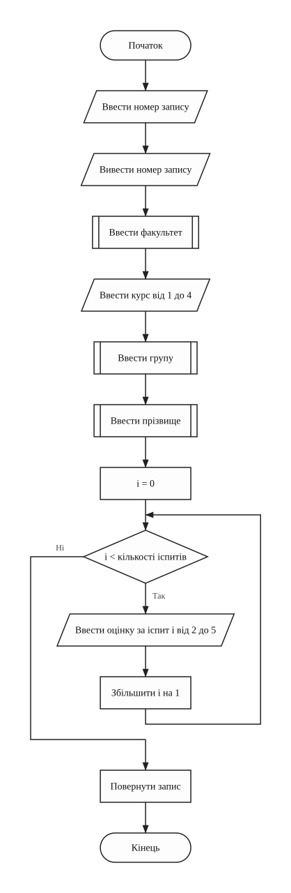
readRecord (введення одного запису з клавіатури)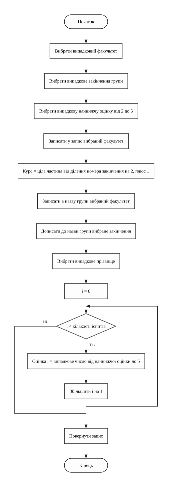
generateRecord (створення випадкового запису)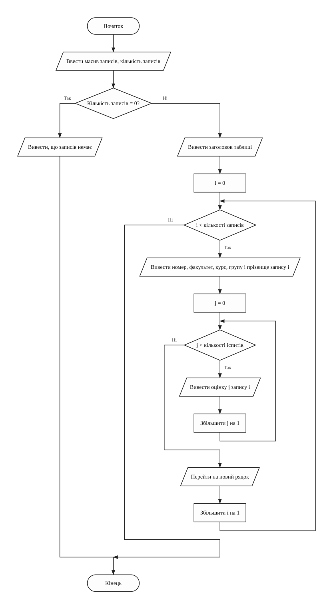
printJournal (виведення масиву записів таблицею)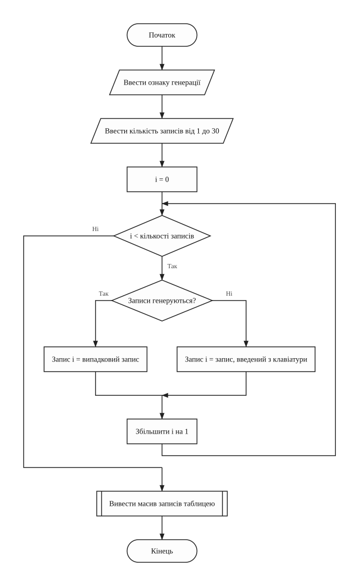
createJournal (створення масиву записів)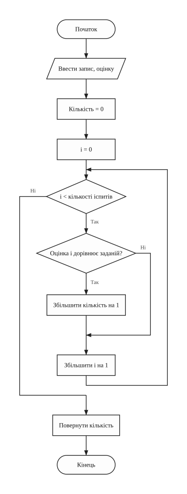
countGrades (підрахунок заданої оцінки в записі)
findFirst (пошук першого запису тієї самої пари або групи)
printGroups (виведення факультету, курсу і групи записів таблицею)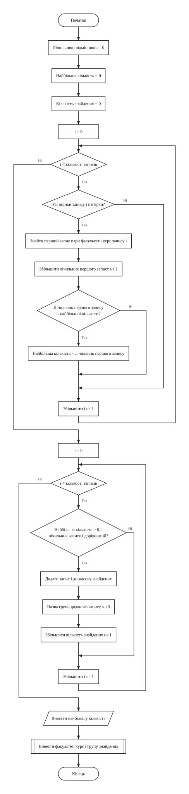
findBestCourses (запит 1: факультет і курс з найбільшою кількістю відмінників)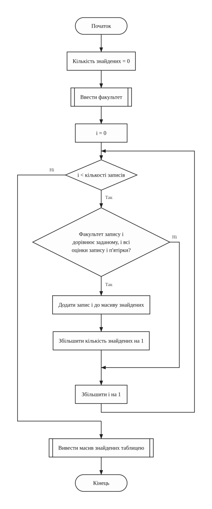
printExcellent (запит 2: відмінники заданого факультету)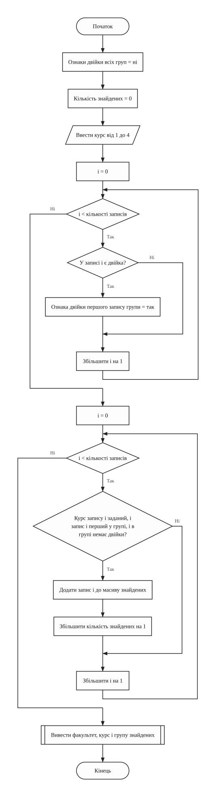
findCleanGroups (запит 3: групи заданого курсу без двієчників)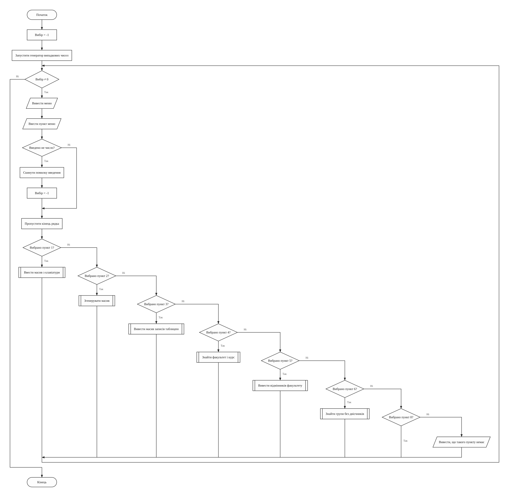
runMenu (меню програми)
main (головна функція)Текст програми
Файл task1.cpp
/// <summary>
/// Лабораторна робота №10, варіант 3. Створити масив структур про студентів і
/// виконати запити про відмінників та групи без двієчників.
/// </summary>
/// <remarks>
/// Ім'я файлу: task1.cpp
/// Автор: Чумак Кирил, гр. ІПЗ-11(3)
/// Номер версії модуля: version 1
/// </remarks>
#include <cstdlib>
#include <cstring>
#include <ctime>
#include <iomanip>
#include <iostream>
using namespace std;
// Константи
const int MAX_RECORDS = 30; // найбільша кількість записів
const int FIELD_SIZE = 16; // розмір текстового поля разом із нулем
const int EXAM_COUNT = 3; // кількість іспитів
const int MAX_COURSE = 4; // найбільший курс
const int FAIL_GRADE = 2; // двійка
const int TOP_GRADE = 5; // п'ятірка
const int FACULTY_COUNT = 3; // кількість факультетів для генерації
const int SUFFIX_COUNT = 4; // кількість закінчень назви групи
const int SURNAME_COUNT = 8; // кількість прізвищ для генерації
// факультети, закінчення назв груп і прізвища для генерації
const char FACULTIES[FACULTY_COUNT][FIELD_SIZE] = {"FIT", "LAW", "ECO"};
const char SUFFIXES[SUFFIX_COUNT][FIELD_SIZE] = {"-11", "-12", "-21", "-22"};
const char SURNAMES[SURNAME_COUNT][FIELD_SIZE] = {
"Melnyk", "Bondar", "Tkachuk", "Savchuk",
"Rudenko", "Lysenko", "Moroz", "Klymenko"};
// Структури
struct StudentRecord // запис про одного студента
{
char faculty[FIELD_SIZE];
int course;
char group[FIELD_SIZE];
char surname[FIELD_SIZE];
int grades[EXAM_COUNT];
};
// Глобальні змінні
StudentRecord journal[MAX_RECORDS] = {}; // масив записів про студентів
int recordCount = 0; // кількість записів у масиві
/// <summary>
/// Виводить назву роботи й автора
/// </summary>
void printTitle()
{
cout << "Lab work 10. Variant 3." << endl;
cout << "Author: Kyryl Chumak, group IPZ-11(3)" << endl << endl;
cout << "Array of structures: faculty, course, group, surname," << endl;
cout << "exam grades. Find the faculty and course with the most" << endl;
cout << "excellent students, print the list of excellent students," << endl;
cout << "find the groups without failing students." << endl;
}
/// <summary>
/// Вводить ціле число із заданих меж і забирає кінець рядка, щоб після неї
/// працювало cin.getline
/// </summary>
/// <param name="minValue">нижня межа числа</param>
/// <param name="maxValue">верхня межа числа</param>
/// <returns>введене число</returns>
int inputNumber(int minValue, int maxValue)
{
int number = 0; // введене число
cin >> number;
while (cin.fail() || number < minValue || number > maxValue)
{
cin.clear(); // скинути помилку введення
cin.ignore(1000, '\n'); // і пропустити неправильний рядок
cout << "Error! Enter a number from " << minValue << " to " << maxValue
<< ": ";
cin >> number;
}
cin.ignore(1000, '\n');
return number;
}
/// <summary>
/// Вводить текстове поле довжиною до 15 символів
/// </summary>
/// <param name="field">масив для введеного тексту</param>
void inputField(char field[])
{
cin.getline(field, FIELD_SIZE);
while (cin.fail())
{
cin.clear(); // скинути помилку введення
cin.ignore(1000, '\n'); // і пропустити задовгий рядок
cout << "Error! Enter at most 15 characters: ";
cin.getline(field, FIELD_SIZE);
}
}
/// <summary>
/// Вводить з клавіатури один запис
/// </summary>
/// <param name="number">номер запису для підказки</param>
/// <returns>заповнена структура</returns>
StudentRecord readRecord(int number)
{
StudentRecord record = {}; // новий запис
int i = 0; // номер іспиту
cout << "Record " << number << endl;
cout << "Enter faculty: ";
inputField(record.faculty);
cout << "Enter course (from 1 to " << MAX_COURSE << "): ";
record.course = inputNumber(1, MAX_COURSE);
cout << "Enter group: ";
inputField(record.group);
cout << "Enter surname: ";
inputField(record.surname);
for (i = 0; i < EXAM_COUNT; i++)
{
cout << "Enter grade " << i + 1 << " (from 2 to 5): ";
record.grades[i] = inputNumber(FAIL_GRADE, TOP_GRADE);
}
return record;
}
/// <summary>
/// Створює випадковий запис. Найнижча оцінка студента теж випадкова, тому серед
/// записів є і відмінники, і студенти з двійками
/// </summary>
/// <returns>заповнена структура</returns>
StudentRecord generateRecord()
{
StudentRecord record = {}; // новий запис
int facultyIndex = rand() % FACULTY_COUNT; // номер факультету
int suffixIndex = rand() % SUFFIX_COUNT; // номер закінчення групи
// найнижча оцінка студента
int lowestGrade = FAIL_GRADE + rand() % (TOP_GRADE - FAIL_GRADE + 1);
int i = 0; // номер іспиту
strcpy(record.faculty, FACULTIES[facultyIndex]);
record.course = suffixIndex / 2 + 1;
strcpy(record.group, FACULTIES[facultyIndex]);
strcat(record.group, SUFFIXES[suffixIndex]);
strcpy(record.surname, SURNAMES[rand() % SURNAME_COUNT]);
for (i = 0; i < EXAM_COUNT; i++)
{
record.grades[i] = lowestGrade + rand() % (TOP_GRADE - lowestGrade + 1);
}
return record;
}
/// <summary>
/// Виводить масив записів таблицею
/// </summary>
/// <param name="list">покажчик на масив записів</param>
/// <param name="size">кількість записів</param>
void printJournal(StudentRecord* list, int size)
{
int i = 0; // номер запису
int j = 0; // номер іспиту
if (size == 0)
{
cout << "No records." << endl;
}
else
{
cout << setw(3) << "No" << setw(9) << "Faculty" << setw(8) << "Course"
<< setw(17) << "Group" << setw(17) << "Surname" << " Grades"
<< endl;
for (i = 0; i < size; i++)
{
cout << setw(3) << i + 1 << setw(9) << list[i].faculty << setw(8)
<< list[i].course << setw(17) << list[i].group << setw(17)
<< list[i].surname << " ";
for (j = 0; j < EXAM_COUNT; j++)
{
cout << setw(2) << list[i].grades[j];
}
cout << endl;
}
}
}
/// <summary>
/// Створює масив: вводить кількість записів, заповнює масив і виводить його
/// таблицею
/// </summary>
/// <param name="isRandom">true, якщо записи генеруються</param>
void createJournal(bool isRandom)
{
int i = 0; // номер запису
cout << "Enter number of records (from 1 to " << MAX_RECORDS << "): ";
recordCount = inputNumber(1, MAX_RECORDS);
for (i = 0; i < recordCount; i++)
{
if (isRandom)
{
journal[i] = generateRecord();
}
else
{
journal[i] = readRecord(i + 1);
}
}
printJournal(journal, recordCount);
}
/// <summary>
/// Рахує, скільки разів задана оцінка є в записі
/// </summary>
/// <param name="record">запис</param>
/// <param name="grade">оцінка</param>
/// <returns>кількість таких оцінок</returns>
int countGrades(StudentRecord record, int grade)
{
int count = 0; // кількість оцінок
int i = 0; // номер іспиту
for (i = 0; i < EXAM_COUNT; i++)
{
if (record.grades[i] == grade)
{
count++;
}
}
return count;
}
/// <summary>
/// Знаходить перший запис масиву з тим самим факультетом і курсом, що в
/// заданого запису, а якщо isWholeCourse = false, то й з тією самою групою
/// </summary>
/// <param name="index">номер запису</param>
/// <param name="isWholeCourse">чи не враховувати групу</param>
/// <returns>номер першого такого запису</returns>
int findFirst(int index, bool isWholeCourse)
{
int first = 0; // номер запису, що перевіряється
bool isFound = false; // чи знайдено запис
while (!isFound)
{
if (strcmp(journal[first].faculty, journal[index].faculty) == 0
&& journal[first].course == journal[index].course
&& (isWholeCourse
|| strcmp(journal[first].group, journal[index].group) == 0))
{
isFound = true;
}
else
{
first++;
}
}
return first;
}
/// <summary>
/// Виводить таблицею факультет, курс і групу кожного запису масиву
/// </summary>
/// <param name="list">покажчик на масив записів</param>
/// <param name="size">кількість записів</param>
void printGroups(StudentRecord* list, int size)
{
int i = 0; // номер запису
if (size == 0)
{
cout << "No results." << endl;
}
else
{
cout << setw(9) << "Faculty" << setw(8) << "Course" << setw(17)
<< "Group" << endl;
for (i = 0; i < size; i++)
{
cout << setw(9) << list[i].faculty << setw(8) << list[i].course
<< setw(17) << list[i].group << endl;
}
}
}
/// <summary>
/// Запит 1. Рахує відмінників кожної пари "факультет, курс" (лічильник лежить у
/// першому записі пари) і відбирає пари з найбільшою кількістю
/// </summary>
void findBestCourses()
{
StudentRecord results[MAX_RECORDS]; // перші записи знайдених пар
int counts[MAX_RECORDS] = {}; // лічильники відмінників
int maxCount = 0; // найбільша кількість
int first = 0; // перший запис пари
int size = 0; // кількість знайдених пар
int i = 0; // номер запису
for (i = 0; i < recordCount; i++)
{
if (countGrades(journal[i], TOP_GRADE) == EXAM_COUNT)
{
first = findFirst(i, true);
counts[first]++;
if (counts[first] > maxCount)
{
maxCount = counts[first];
}
}
}
for (i = 0; i < recordCount; i++)
{
if (maxCount > 0 && counts[i] == maxCount)
{
results[size] = journal[i];
strcpy(results[size].group, "all");
size++;
}
}
cout << "Maximum number of excellent students: " << maxCount << endl;
printGroups(results, size);
}
/// <summary>
/// Запит 2. Відбирає відмінників заданого факультету в окремий масив і виводить
/// його таблицею
/// </summary>
void printExcellent()
{
StudentRecord excellent[MAX_RECORDS]; // знайдені відмінники
char faculty[FIELD_SIZE] = ""; // ключ пошуку
int size = 0; // кількість знайдених
int i = 0; // номер запису
cout << "Enter faculty: ";
inputField(faculty);
for (i = 0; i < recordCount; i++)
{
if (strcmp(journal[i].faculty, faculty) == 0
&& countGrades(journal[i], TOP_GRADE) == EXAM_COUNT)
{
excellent[size] = journal[i];
size++;
}
}
printJournal(excellent, size);
}
/// <summary>
/// Запит 3. Позначає групи, де є двійка (ознака лежить у першому записі групи),
/// і відбирає решту груп заданого курсу
/// </summary>
void findCleanGroups()
{
StudentRecord results[MAX_RECORDS]; // перші записи знайдених груп
bool hasFail[MAX_RECORDS] = {}; // чи є двійка в групі
int course = 0; // ключ пошуку
int size = 0; // кількість знайдених груп
int i = 0; // номер запису
cout << "Enter course (from 1 to " << MAX_COURSE << "): ";
course = inputNumber(1, MAX_COURSE);
for (i = 0; i < recordCount; i++)
{
if (countGrades(journal[i], FAIL_GRADE) > 0)
{
hasFail[findFirst(i, false)] = true;
}
}
for (i = 0; i < recordCount; i++)
{
if (journal[i].course == course && findFirst(i, false) == i
&& !hasFail[i])
{
results[size] = journal[i];
size++;
}
}
printGroups(results, size);
}
/// <summary>
/// Показує меню і викликає вибрані дії, поки не вибрано вихід
/// </summary>
void runMenu()
{
int choice = -1; // вибраний пункт меню
srand(time(NULL));
while (choice != 0)
{
cout << endl << "1. Enter array from keyboard" << endl;
cout << "2. Generate array" << endl;
cout << "3. Print array" << endl;
cout << "4. Faculty and course with most excellent students" << endl;
cout << "5. Excellent students of a faculty" << endl;
cout << "6. Groups of a course without fail grades" << endl;
cout << "0. Exit" << endl;
cout << "Choose menu item: ";
cin >> choice;
if (cin.fail())
{
cin.clear();
choice = -1;
}
cin.ignore(1000, '\n');
switch (choice)
{
case 1 : createJournal(false); break;
case 2 : createJournal(true); break;
case 3 : printJournal(journal, recordCount); break;
case 4 : findBestCourses(); break;
case 5 : printExcellent(); break;
case 6 : findCleanGroups(); break;
case 0 : break;
default : cout << "No such menu item." << endl;
}
}
}
/// <summary>
/// Головна функція програми
/// </summary>
/// <returns>0 після завершення роботи</returns>
int main()
{
printTitle();
runMenu();
return 0;
}
Результати виконання
Перший запуск містить контрольний приклад із шести записів і всі три запити. Другий показує порожній масив і некоректне введення. У третьому масив згенеровано.
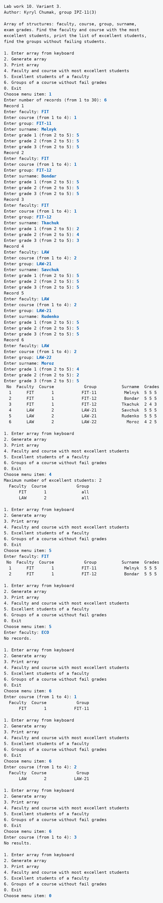
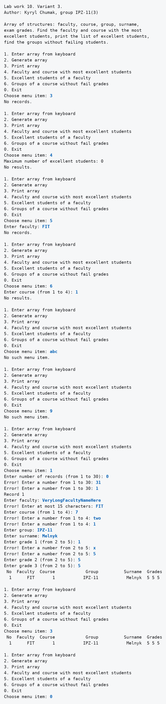
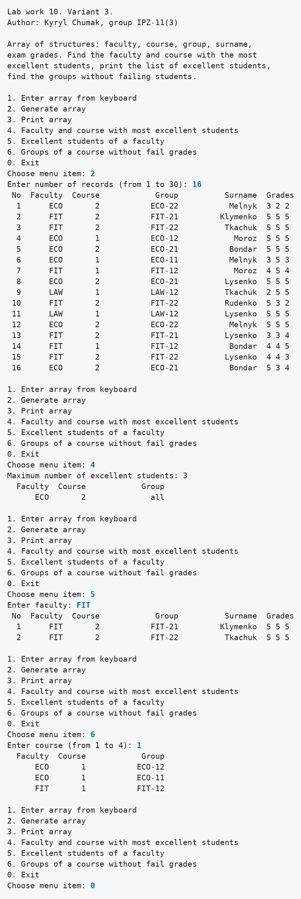
Аналіз достовірності результатів
Контрольний приклад
Дані взято з першого запуску. Результат кожного запиту я спершу порахував вручну за таблицею записів, а потім порівняв із виводом програми.
Таблиця 2 - Контрольний приклад із шести записів
| Запит | Ручний підрахунок | Результат програми |
|---|---|---|
| Найбільша кількість відмінників | FIT, курс 1: Melnyk, Bondar, тобто 2; LAW, курс 2: Savchuk, Rudenko, тобто 2 | 2, пари FIT 1 і LAW 2 |
| Відмінники факультету FIT | Melnyk, Bondar | Melnyk, Bondar |
| Відмінники факультету ECO | таких записів немає | No records. |
| Групи курсу 1 без двієчників | FIT-11, бо у FIT-12 Tkachuk має двійку | FIT-11 |
| Групи курсу 2 без двієчників | LAW-21, бо у LAW-22 Moroz має двійку | LAW-21 |
| Групи курсу 3 без двієчників | записів курсу 3 немає | No results. |
Згенерований масив
Для 16 випадкових записів із третього запуску я теж порахував результат вручну.
Таблиця 3 - Ручна перевірка згенерованого масиву
| Запит | Ручний підрахунок | Результат програми |
|---|---|---|
| Найбільша кількість відмінників | ECO, курс 2: записи 5, 8, 12, тобто 3; FIT, курс 2: записи 2, 3, тобто 2; ECO, курс 1: запис 4; LAW, курс 1: запис 11 | 3, пара ECO 2 |
| Відмінники факультету FIT | записи 2 і 3: Klymenko, Tkachuk | Klymenko, Tkachuk |
| Групи курсу 1 без двієчників | ECO-12, ECO-11, FIT-12; у LAW-12 запис 9 має двійку | ECO-12, ECO-11, FIT-12 |
Висновки
Написано програму з меню, яка створює масив структур про студентів з клавіатури або генерацією, виводить його таблицею і виконує три запити. У першому запиті пари "факультет, курс" заздалегідь не відомі, тому лічильник кожної пари стоїть на місці її першого запису. Контрольний приклад і згенерований масив дали ті самі результати, що й ручний підрахунок, у тому числі коли дві пари мають однаковий максимум.